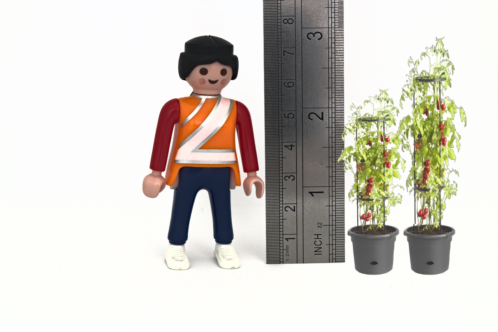
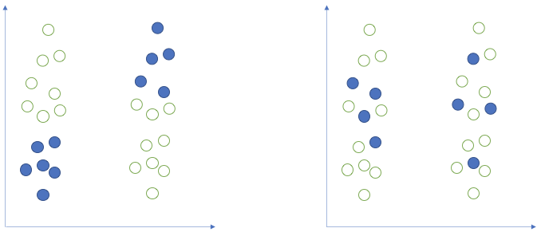

More tests
Exercises: \(\chi^2\) Goodness of Fit Test.
In the survey during the welcome week, we asked you (and students on other stats courses in the department) which month you were born in. The data is at https://uoepsy.github.io/data/surveydata_allcourse.csv.
What is your intuition about the distribution of students’ birth-months?
Do you think they will be spread uniformly across all months of the year (like a fair 12-sided dice), or do you think people are more likely to be born in certain months more than others?
Plot the distribution and get an initial idea of how things are looking.
Tip: You can do this quickly with barplot() and table(), or you could create try using ggplot() and looking into geom_bar().
(We’ve made the solutions visible immediately for this question, because they contain some useful little bits of code for re-ordering the months)
We’re going to perform a statistical test to assess the extent to which our data conforms to the hypothesis that people are no more likely to be born on one month than another.
Under this hypothesis, what would be the proportional breakdown of observed births in each of the months?
Given that there 298 observations in our sample, how many observations would we expect to find with a birthday in January? And in February? … and so on?
The test procedure we are about to apply is called a chi-square goodness-of-fit test.
It applies to a categorical variable, and the null hypothesis asserts specific values for the population proportion in each category. The alternative hypothesis simply states that at least one of the population proportions is not as specified in the null hypothesis.
As always, the test statistic measures how far the observed sample results deviate from what is expected if the null hypothesis is true. With a chi-square test, you construct the test statistic by comparing the observed sample counts in each category to the expected counts under the null hypothesis.
The test-statistic (denoted \(\chi^2\), spelled chi-square, pronounced “kai-square”) is obtained by adding up the standardized squared deviations in each category:
\[
\chi^2 = \sum_{i} \frac{(\text{Observed}_i - \text{Expected}_i)^2}{\text{Expected}_i}
\]
The code below creates counts for each month:
survey_data %>%
group_by(birthmonth) %>%
summarise(
observed = n()
)(A shortcut for this would be survey_data %>% count(birthmonth))
Add to the code above to create columns showing:
- the expected counts \(E_i\)
- observed-expected (\(O_i - E_i\))
- the squared differences \((O_i - E_i)^2\)
- the standardised square differences \(\frac{(O_i - E_i)^2}{E_i}\)
Then calculate the \(\chi^2\) statistic (the sum of the standardised squared differences).
If your observed counts matched the expected counts perfectly, what would the \(\chi^2\) statistic be?

Figure 1: Chi-Square Distributions
We can find out the proportion of the distribution which falls to either side of a given value of \(\chi^2\) using pchisq(). We need to give it our calculated \(\chi^2\) statistic, our degrees of freedom (df), which is equal to the number of categories minus 1. We also need to specify whether we want the proportion to the left (lower.tail=TRUE) or to the right (lower.tail=FALSE).
- Using
pchisq(), calculate the probability of observing a \(\chi^2\) statistic as least as extreme as the one we have calculated.
- Check that these results match with those provided by R’s built-in function:
chisq.test(table(survey_data$birthdaymonth)).
Which months of year had the highest contributions to the chi-square test statistic?
Hint: think about your standardised squared deviations.
According to the internet (that reliable source of information!), 76% of people in the world have brown eyes, 10% have blue, 5% hazel, 5% amber, 2% green, 1% grey, and 1% have some other eye colouring (red/violet/heterochromia).
Perform a \(\chi^2\) goodness of fit test to assess the extent to which our sample of students of 2020/21 conform to this theorised distribution of eye-colours.
- Hint:
chisq.test(..., p = c(?,?,?,...) ).
What are the observed proportions of our sample with each eyecolour?
Can you figure out how to use the prop.table() function?
Exercises: \(\chi^2\) Test of Independence.
Research Question: Can telling a joke affect whether or not a waiter in a coffee bar receives a tip from a customer?
A study published in the Journal of Applied Social Psychology1 investigated this question at a coffee bar of a famous seaside resort on the west Atlantic coast of France. The waiter randomly assigned coffee-ordering customers to one of three groups. When receiving the bill, one group also received a card telling a joke, another group received a card containing an advertisement for a local restaurant, and a third group received no card at all.
The data are available at https://uoepsy.github.io/data/TipJoke.csv.
The dataset contains the variables:
Card: None, Joke, Ad.Tip: 1 = The customer left a tip, 0 = The customer did not leave tip.
Produce a plot and a table to display the relationship between whether or not the customer left a tip, and what (if any) card they received alongside the bill.
What would you expect the cell counts to look like if there were no relationship between what the waiter left and whether or not the customer tipped?
Just like we gave the chisq.test() function a table of observed frequencies when we conducted a goodness of fit test in earlier exercises, we can give it a two-way table of observed frequencies to conduct a test of independence.
Try it now.
Why is the degrees of freedom 2 (df = 2)?
Degrees of freedom for a \(\chi^2\) test of independence is calculated as:
\[ \begin{align} & df = (r - 1)(c - 1) \\ & \text{Where:} \\ & r = \text{number of rows} \\ & c = \text{number of columns} \\ \end{align} \] Why? Well, remember that the degrees of freedom is the number of values that are free to vary as we estimate parameters. In a \(3 \times 2\) table like the one we have for Cards \(\times\) Tips, the degrees of freedom is the number of cells in the table that can vary before we can simply calculate the values of the other cells (where we’re constrained by the need to sum to our row/column totals).
Revisiting “Hypothesis Testing”.
Now that you have performed a number of different types of statistical hypothesis test, it is worth revisiting the general concept in order to consolidate what you’ve been doing.
- Step 1. We have been starting by considering what a given statistic is likely to be if a given hypothesis (the null) were true.
- For the \(t\)-tests, if the null hypothesis is true (there is no difference between group means/between our observed mean and some value), then our \(t\)-statistics (if we could do our study loads of times) will mainly fall around 0, and follow a \(t\)-distribution. The precise \(t\)-distribution depends on the degrees of freedom, which in turn depends on how much data we have.
- For the \(\chi^2\) tests, if the null hypothesis is true and there is no difference between the observed and expected frequencies, then our \(\chi^2\)-statistics will follow the \(\chi^2\) distribution (i.e., with 2 categories, most of them will be between 0 and 2, with fewer falling >2, see the yellow line in Figure 1).
- For the \(t\)-tests, if the null hypothesis is true (there is no difference between group means/between our observed mean and some value), then our \(t\)-statistics (if we could do our study loads of times) will mainly fall around 0, and follow a \(t\)-distribution. The precise \(t\)-distribution depends on the degrees of freedom, which in turn depends on how much data we have.
- Step 2. We calculate our statistic from our observed data.
- Step 3. We ask what the probability is of getting a statistic at least as extreme as we get from Step 2, assuming the null hypothesis we stated in Step 1.
If you’re finding the programming easy, but the statistical concepts difficult
Another way which might help to think about this is that if we can make a computer do something over and over again, we can do stats! This is similar to what we were doing in last weeks’ exercises with replicate()!
- make the computer generate random data, based on some null hypothesis. Do it lots of times.

- what proportion of the simulations produce results similar to the observed data (i.e., as extreme or more extreme)? This is \(p\). The only difference between this and “statistics” is that we calculate \(p\) using math, rather than having to generate random data.
“Statistically significant” & Further readings.
An agricultural company is testing out a new fertiliser they have developed to improve tomato growth.
They plant 1000 seeds (taken from the same tomato plant) in the same compost and place them in positions with the same amount of sunlight. 500 of the plants receive 100ml of water daily, and the other 500 receive a 100ml of the fertiliser mixed with water. After 100 days, they measure the height of all the tomato plants (in cm).
You can find the data at https://uoepsy.github.io/data/tomatogrowth.csv.
Conduct the appropriate test to determine whether the fertiliser provides a statistically significant improvement to tomato plant growth.

Figure 2: Relationship between tomato plant height and crop yield
Consider the above plot. For every 5cm taller a tomato plant is, it tends to provide 1 more tomato.
Now consider the agricultural company’s situation in the previous question. Given that the fertiliser is comparitively pricey for them to manufacture, is it worth putting into production?
Further Reading
The above exercises are aimed to demonstrate that whether or not our p-value is below some set criteria (e.g., .05, .01, .001) is only a small part of the picture. There are many things which are good to remember about p-values:
With a big enough sample size, even a tiny tiny effect is detectable at <.05. For example, you might be interested in testing if the difference in population means across two groups is 0 (\(\mu_1 - \mu_2 = 0\). Your calculated sample difference could be \(\bar{x}_1 - \bar{x}_2 = 0.00002\) but with a very small p-value of 0.00000001. This would tell you that there is strong evidence that the observed difference in means (0.00002) is significantly different from 0. However, the practical difference, that is - the magnitude of the distance between 0.00002 and 0 - is negligible and of pretty much no interest to practitioners. This is the idea we saw in the tomato-plant example.
The criteria (\(\alpha\)) which we set (at .05, .01, etc.), is arbitrary.
Two things need to be kept in mind: there is the true status of the world (which is unknown to us) and the collected data (which are available and reveal the truth only in part).
An observed p-value smaller than the chosen alpha does not imply the true presence of an effect. The observed difference might be due to sampling variability.
Figure 3: Two possible samples (blue dots) drawn from two populations with same mean. On the left, the selected sample shows a big difference. On the right, the sample shows no difference. Samples such as that on the left are very unlikely to happen (e.g., 5% of the time). It is for these unlikely samples that we would reject the null hypothesis incorrectly 5% of the time.
Even if a null hypothesis about the population is actually true, then 5% (if \(\alpha\) = 0.05) of the test-statistics computed on different samples from that population would result in a p-value <.05. If you were to obtain 100 random samples from that population, five out of the 100 p-values are likely to be <.05 even if the null hypothesis about the population was actually true.
If you have a single dataset, and you perform several tests of hypotheses on those data, each test comes with a probability of incorrectly rejecting the null (making a type I error) of 5%. Hence, considering the entire family of tests computed, your overall type I error probability will be larger than 5%. In simple words, this means that if you perform enough tests on the same data, you’re almost sure to reject one of the null hypotheses by mistake. This concept is known as multiple comparisons.
Further reading
There are many different competing approaches to doing statistical analyses.
In this course we are learning about what is known as the frequentist framework. Roughly speaking, this is where probabilities are defined as “long-run frequencies” (i.e., the probability of \(x\) happening over many many trials2). Even within the frequentist approach, there are different views as to how to how this definition of probability is best utilised.
The following links provide some introductory readings to some of the different schools of thought:
The correctly-used p value needs an effect size and CI - don’t worry too much about the background of this blog, but it offers some useful visualisations to show how important it is to remember about the uncertainty in our estimates.
Gueaguen, N. (2002). The Effects of a Joke on Tipping When It Is Delivered at the Same Time as the Bill. Journal of Applied Social Psychology, 32(9), 1955-1963.↩︎
For those of you who are interested in what alternative definitions there are, do a google search for “frequentist vs bayesian”. Be prepared that this will open a big can of worms!↩︎

This workbook was written by Josiah King, Umberto Noe, and Martin Corley, and is licensed under a Creative Commons Attribution 4.0 International License.